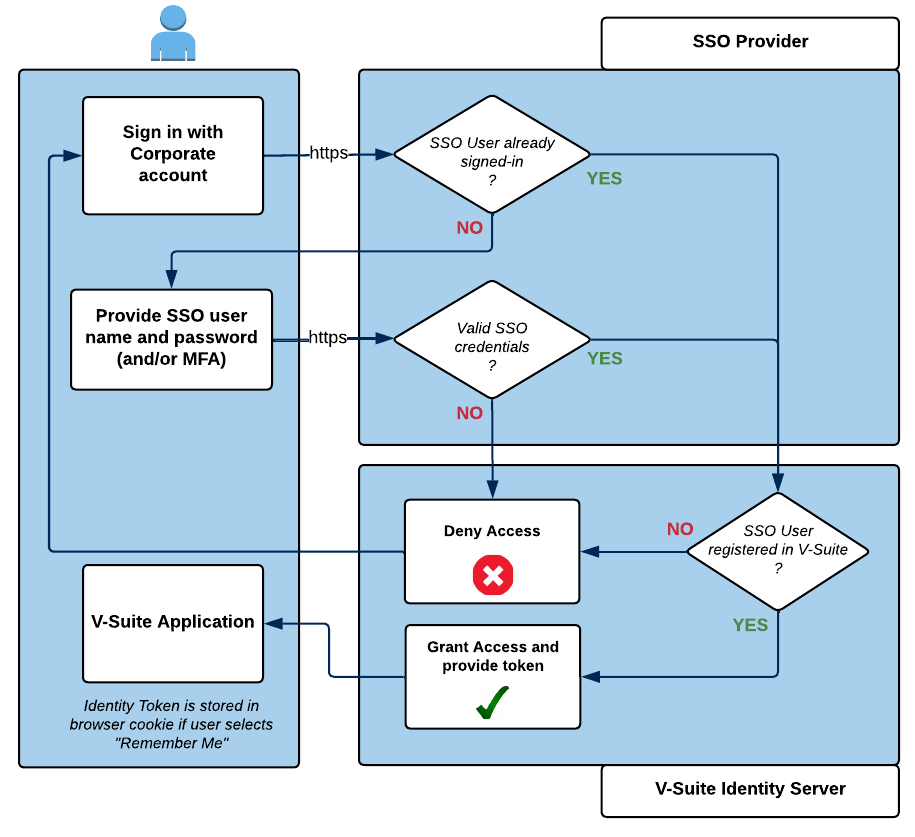

验证
V-Suite提供两种验证用户凭据的方法：
- 通过单点登录 (SSO) 提供商进行身份验证，例如 Azure Active Directory 或 Active Directory 联合身份验证服务 (ADFS)
- 使用V-Suite用户名和密码进行身份验证
登录服务通过V-Suite Identity Server 提供。
通过单点登录 (SSO) 提供商进行身份验证
下图说明了使用“使用公司帐户登录”按钮登录时的登录和身份验证过程：

- 用户使用“使用公司帐户登录”按钮发起 SSO 身份验证请求。
- 如果用户已经通过单点登录 (SSO) 提供商的身份验证（可能是由于使用具有相同 SSO 提供商的另一个应用程序），系统将识别这一点，并且用户将无缝定向到该应用程序，而无需额外的操作登录提示。
- 如果用户尚未经过身份验证，他们将通过 HTTP over SSL (HTTPS) 安全地向 SSO 提供商提供用户名和密码。
- 然后，SSO 提供商验证用户名，并根据配置的外部用户目录（例如 Azure AD 或 ADFS）对用户进行身份验证。
- 用户通过身份验证后，系统会检查通过身份验证的用户是否已在V-Suite Web中注册。
- 如果用户在V-Suite Web中注册，他们将被授予访问V-Suite应用程序的权限，并颁发身份令牌。
- 但是，如果用户未在V-Suite Web中注册，则会显示错误消息。该消息将指示用户联系V-Suite Web管理员以请求访问权限，或以具有访问权限的其他用户身份通过 SSO 登录。
- 如果用户在登录期间选择“记住我”功能，则身份令牌将存储在浏览器 cookie 中。下次用户启动浏览器时，此 cookie 信息将自动提供给身份服务器。如果令牌仍然有效，则授予访问权限，而无需用户再次向 SSO 提供商进行身份验证。请注意，用户名和密码均不存储在 cookie 中。
使用条件：
- 系统必须具有已配置的单点登录 (SSO) 身份验证提供程序。
- SSO认证在区域和互联网接入场景下均可实现。
- 系统管理员可以禁用“记住我”选项。
使用V-Suite用户名和密码进行身份验证
使用V-Suite用户名和密码登录时的登录和认证流程如下图所示：

- 用户通过 HTTP over SSL (HTTPS) 安全地向身份服务器提供V-Suite用户电子邮件和密码。
- Identity Server 验证指定的电子邮件是否属于有效的V-Suite用户，然后根据其用户帐户的内部目录对用户进行身份验证。
- 如果通过身份验证，用户将被授予访问V-Suite应用程序的权限，并获得身份令牌。
- 如果用户在登录时选择“记住我”选项，则身份令牌将存储在浏览器 cookie 中。下次用户启动浏览器时，cookie 信息将提供给身份服务器，如果令牌有效，则用户将被授予访问权限，而无需提供用户名和密码。身份服务器不会将用户电子邮件或密码存储在 cookie 中。
使用条件：
- 无论是区域还是互联网接入场景，都可以使用V-Suite用户名和密码进行身份验证。
- 系统管理员可以禁用“记住我”选项。